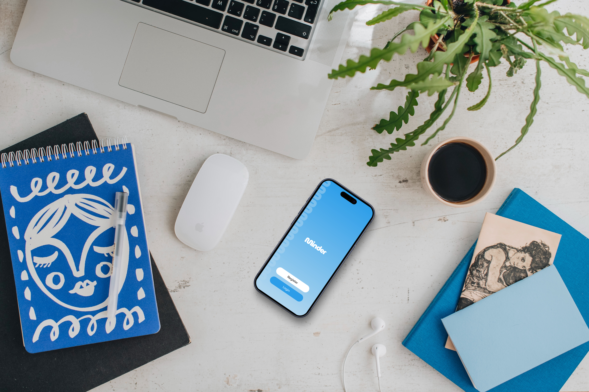
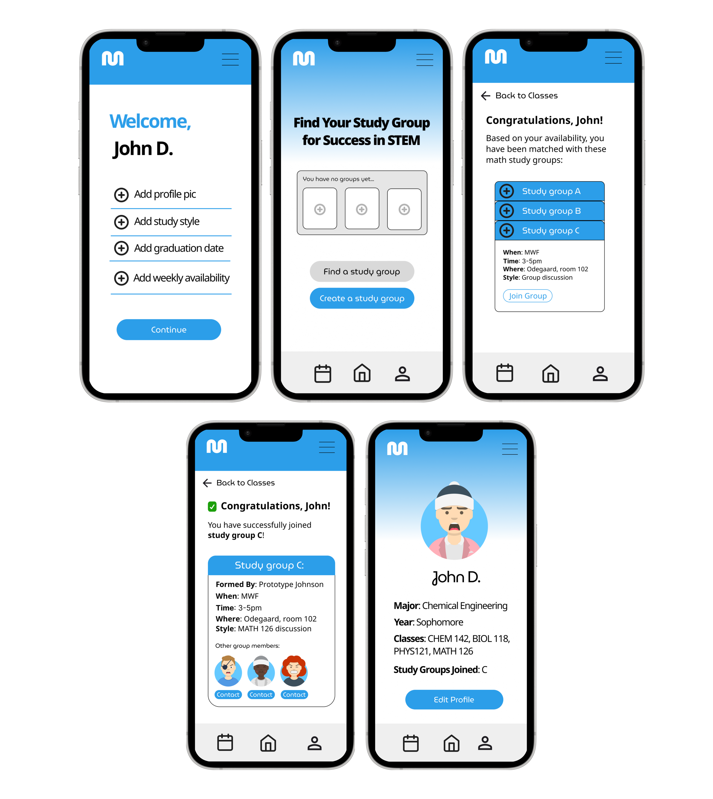
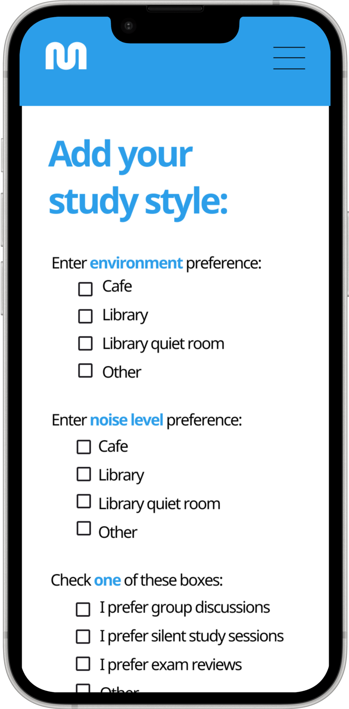
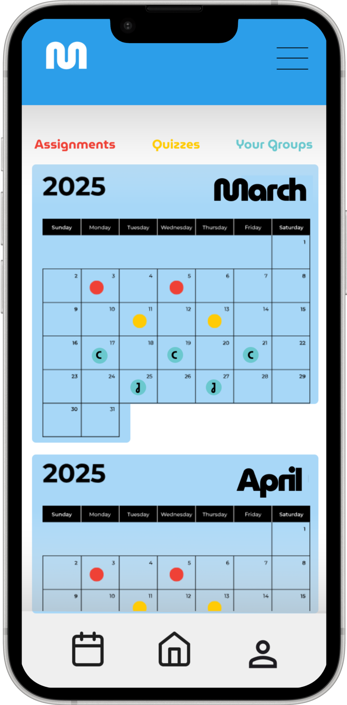
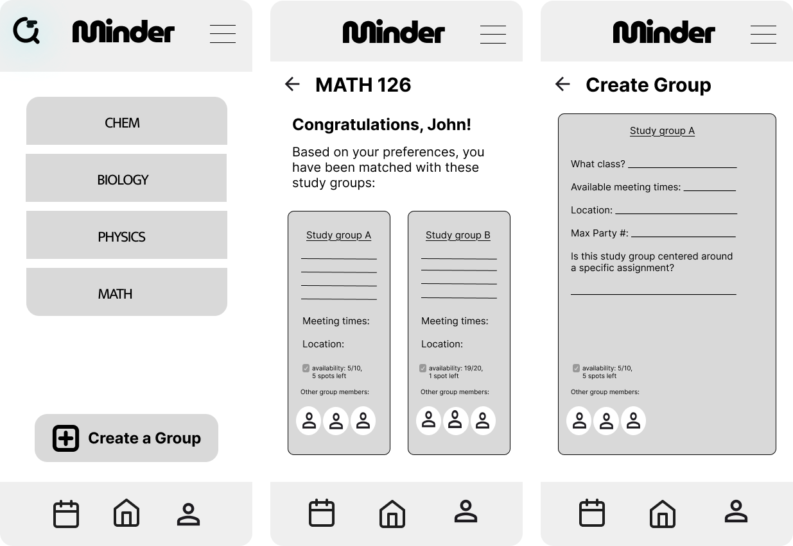
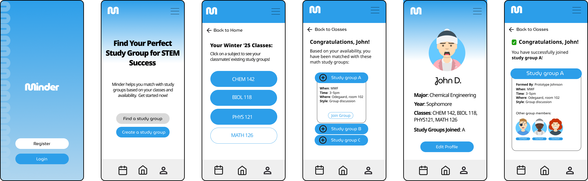
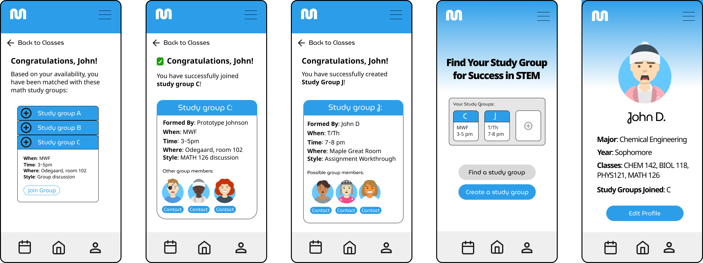

Helping students feel connected beyond the classroom.
Minder

The Problem
The Problem
"I don't want to walk all the way to Odegaard library just to find out no one else showed up."
UW mechanical engineering student
From personal experience and three student interviews, we found that a lot of STEM students want study groups but don't know how to start one, or feel too intimidated to try. Large lecture halls at UW make it harder to meet people in the first place, and the usual workarounds (Slack, GroupMe, asking someone after class) feel random and unreliable.
Minder
Minder
Minder is a mobile app that lets students find study partners in the same class, filter by schedule and study preferences, and see what a session is for before showing up.

What it does
Study preferences for better matches
When setting up their profile, students add study preferences — environment, noise level, and how they like to work (group discussion, silent sessions, exam review, etc.). This gives Minder more to match on, so groups aren't just in the same class but actually compatible.

A calendar for your study groups
The calendar shows assignments and quizzes alongside the days your joined or created study groups are meeting. Color-coded markers make it easy to see what's coming up — so you're not digging through Slack to remember when your group meets next.

The Gap
Existing tools weren't built for forming study groups
Discord and GroupMe work fine for chat. Canvas holds coursework. Neither really helps you find two other people in your class, agree on what you're studying, and actually meet up. After a competitive analysis, we focused on matching by shared classes and cutting down the reasons people bail last minute.
How might we help STEM undergraduates form study groups that are small, have a clear purpose, and feel worth showing up for?
Research
Research
We interviewed three undergraduate STEM students about where they study, how they've tried to form groups before, and what got in the way.
-
Small groups work best
Most students preferred 2–4 people. Bigger groups made it easy for people to disengage.
-
Study environments differ
Some want silent libraries, others prefer cafés or dorm rooms. One default doesn't work for everyone.
-
Groups need a clear goal
When nobody defined the purpose — homework vs. exam prep — sessions fell apart fast.
-
Schedules are the hard part
Finding willing partners wasn't always the issue. Overlapping availability was.
We didn't really have a goal. We just said we'd meet up and then nobody knew what to work on.
Biology major, UW

Iteration
Iteration
For the last 10 weeks we went from lo-fi to hi-fi, with two rounds of usability testing in between.
Round 1 · Mid-fi
Fixing the home screen
People liked structured matching over cold outreach, but several got lost on the home screen — they couldn't figure out how to get from their courses to available groups.
- Simplified home layout: course → find groups
- Added filters for study style, experience level, and availability
- Added onboarding so first-time users know where to start

Round 2 · Hi-fi
Hi-fi refinements
Usability scores were decent and people said they'd use it again, but some still weren't confident in their matches. We cleaned up onboarding copy, made navigation more consistent, and added more fields so schedules and preferences could actually align.
- Step-by-step onboarding with clearer instructions
- More consistent button placement and navigation
- More match fields for schedules and study preferences

Reflection
Reflection
What I learned
- The main issue wasn't missing features — it was that students didn't want to show up to a study session alone or unprepared. That's what we needed to design around.
- In testing, people would say the app was easy to use and then get stuck on the home screen. Watching them use it mattered more than what they told us.
- At our end-of-year showcase, industry designers asked about privacy and safety — stalking, harassment — which we hadn't fully thought through when connecting students by course and schedule.
What I'd do next
- Rework onboarding so study style preference is clearer upfront, instead of feeling like a choose-your-own-adventure.
- Add trust and safety features: reporting, visibility controls, and boundaries within groups.
- Figure out what happens when schedules don't overlap — without a fallback, the app isn't useful to those students.
- Talk to students in more departments, and think about what happens after the first session — not just getting people to join once.
Minder changed how I think about this problem. It wasn't really "build a study app" — it was about the moment someone considers reaching out for help and decides not to.
HCDE 302 & 303 · Team: Jack Strickland, Siheng Li